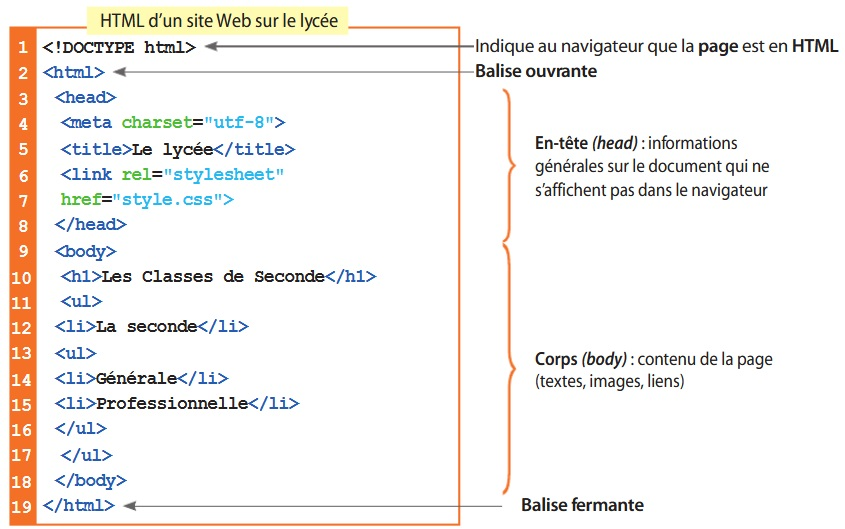

Introduction au langage HTML
Visualisez la vidéo suivante : https://player.vimeo.com/video/138623721?autoplay=1
Depuis la création des pages web par Tim Berners-Lee, les pages sont décrites uniquement par du texte.
Le texte précise à la fois le contenu du document, mais aussi sa mise en page.
Cela signifie que l’on peut écrire un site internet uniquement grâce à un éditeur de texte.
Exemple :
Le tout premier site web est mis en ligne le 20 décembre 1990 par Tim Berners-Lee :
https://www.w3.org/History/19921103-hypertext/hypertext/WWW/TheProject.html
Remarque : il s'agit là d'une reconstitution visible sur le site du W3C à cette adresse - le site original n'existe plus

Créé avec HelpNDoc Personal Edition: Nouvelles et informations sur les outils de logiciels de création d'aide